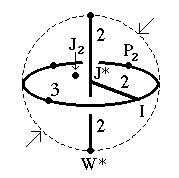
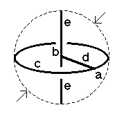

196
196
 198
198 Orbifold Atlas Home Page
Orbifold Atlas Home Page
 Crystallographic Topology Home Page
Crystallographic Topology Home Page
Underlying Topological Space: RP3; Figure Pseudo-Symmetry (FPS): 2mm
Euclidean 3-Orbifold with Invariant-Lattice-Complex Letters
(left), Wyckoff Site Letters (right)
 
| FPS | Mult | Lattice Comp | Group Graph | Wyckoff Set | 2[4]Cover |
| 2-1 | I | 332 | a | ||
| 6-1 | J* | 222 | b | ||
| 8-1 | I4[P2]& | 2<3>& | (c:a-a)1 | ||
| 12-1 | I6[-]J*2 | 33<2>22 | (d:a-b))2 | ||
| 12-1 | J*2[W*]& | 2<2>& | (e:b-b)3 | ||
| 24 | 1 | f:cde | |||
| 2 | 24-1 | I12[J2]J*4 | 2*=332<1>222 | (f1:a-b)4 | #211(h) |
| 24-1 | P23[-]W*2 | 2*=33<1>22 | f2:c-e | #211(i) | |
| m | 24-1 | m* | (f3:de)5 | #204(g) | |
| m | 24-1 | m* | (f4:cd)6 | #217(g) | |
| Struct-Mult | Critical Points | Heegaard Surf | Wyckoff Cut |
| BCC -1 | I/P2/W*/J* | HP3 200{11} | d |
Lattice Points: (1) 0,0,0 + (1/4,1/4,1/4) x2 &; (2) 0,0,0 + (1/2,0,0); (3) 0,1/2,0 + (1/4,0,0) x2 &; (4) 0,0,0 + (1/4,1/4,0) x2; (5) 0,y,z; (6) x,x,z
196
198
Orbifold Atlas Home Page
Crystallographic Topology Home Page
Page last revised: